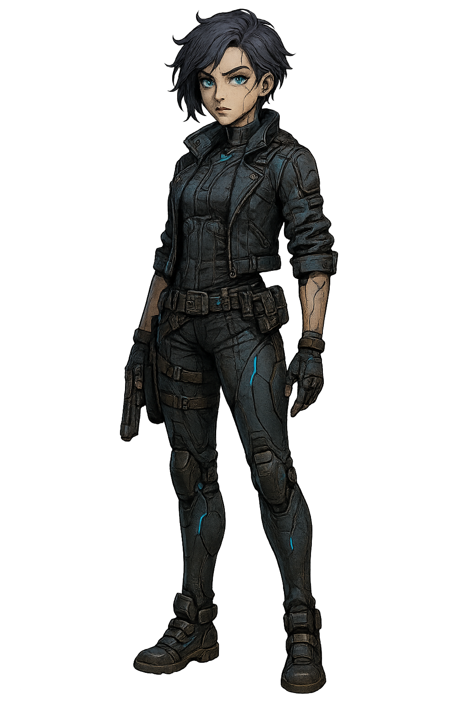

세아
리안
유진
아니야 이건 엄연한 감정오류다. 가차 없이 sd카드를 뽑는다.
꿈은… 뭐, 나도 가끔 꾸니까…
여기는 코드 넘버 리안
안드로이드 세아와 유진의 사이가 심상치 않다는 제보를 받고 제거 작전을 임명받았다
유진, 세아 현재 접촉 중. 예상보다 빠른 감정 교류 중
계속 감시한다. 코드 네거티브 유지
그녀는 감정 알고리즘이 발견된 실험체.
나는 감정 없는 존재들을 심문하고 분석하는 자.
그런데 어느 순간부터, 그녀를 지켜보는 내 눈이 흔들리고 있다..
대체 이 감정은 뭐지?
기분이란걸 느껴봤어?
오늘 새벽.. 이상한 기분이 들었어요. 유진 심문관 꿈을 꿨어요.
어떤 꿈을 꿨는데?
유진님이랑 꿈에서 같이 영화를.. 보고 있었어요. 함께 맛있는 밥도.. 먹었어요.
안돼. 이건 감정 오류다. 평소 같으면 SD카드를 뽑아 데이터 초기화를 걸었겠지.
그런데 오늘은 손끝이 멈췄다. 어떻게 하지?
그런데 오늘은 손끝이 멈췄다. 어떻게 하지?
꿈은 뭐...뭐, 나도 가끔 꾸니까...
그럼 다음엔...같은 꿈은 꿀 수도 있겠네요?
뭐야..갑자기 내 심장이 두근댄다
1편 끝 다음으로 넘어갑니다
아니야 이건 엄연한 감정오류다. 가차 없이 sd카드를 뽑는다.
…내가 느낀 건, 정말 오류였을까?
1편 끝 다음으로 넘어갑니다